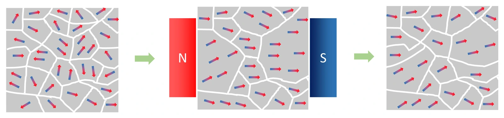

초등 3-4학년 과학 · 자석의 이용 · 웹툰 5화 「서로 끌고 미는 자석 친구들」
실험에서 여러 물건을 자석에 대어 보고, 자석 두 개를 거리를 바꿔 마주 대어 힘을 재 보았습니다. 못·클립처럼 철로 된 물건만 붙었고 알루미늄 캔·구리·지우개·나무는 붙지 않았습니다. 자석의 힘은 조금만 멀어져도 확 약해졌습니다. 자석의 성질을 정리합니다.
실험 데이터 되짚기
자석에 대어 본 물건과, 자석 사이 거리에 따른 힘의 세기(2 cm를 100으로 놓은 모형값)입니다.
| 물건 | 못 (철) | 클립 (철) | 알루미늄 캔 | 구리 동전 | 지우개·나무 |
|---|---|---|---|---|---|
| 붙나요? | 붙음 | 붙음 | 안 붙음 (금속인데도) | 안 붙음 (금속인데도) | 안 붙음 |
| 자석 사이 거리 | 2 cm | 3 cm | 4 cm | 6 cm | 8 cm |
| 힘의 세기 | 100 | 약 20 | 약 6 | 약 1 | 거의 0 |
자석에 붙는 것은 철·니켈·코발트로 된 물건뿐 — 금속이라고 다 붙는 것이 아닙니다. 거리가 2배(2 → 4 cm)가 되면 힘은 100 → 6으로 거의 다 사라집니다.
자석은 철·니켈·코발트처럼 자석에 끌리는 성질이 있는 금속과 그것이 든 합금(강철 등)으로 만든 물건만 끌어당깁니다. 못·클립·철캔은 붙지만, 알루미늄 캔·구리·금은 금속인데도 붙지 않고 지우개·나무·플라스틱·유리도 붙지 않습니다. 철 속에는 아주 작은 자석 조각들이 들어 있어 자석을 가까이 대면 조각들이 같은 방향으로 줄을 서서 물건 자체가 잠시 자석이 되어 끌려옵니다. 재활용 선별장에서는 자석으로 철캔만 골라내고 알루미늄캔은 남깁니다.
교재 그림
철 속의 작은 자석 조각들

빨간 쪽이 작은 조각의 N극이에요. 처음엔 제멋대로라 철이 자석처럼 굴지 않지만, 자석 가까이 두면 조각들이 한 방향으로 줄을 서서 철이 자석에 끌려가요. 철은 자석을 치운 뒤에도 조각들이 조금 남아 약한 자석이 되기도 해요.
움직여 보기
철 속 작은 자석 조각들이 줄을 서요
못 속 작은 자석 조각(화살표)은 처음엔 제멋대로 놓여 있다가 자석이 다가오면 한 방향으로 줄을 서요. 그러면 못이 잠깐 자석이 되어(자석 쪽 끝이 반대 극) 끌려가요. 알루미늄·나무에는 이런 조각이 없어서 꿈쩍도 안 해요.
자석에는 N극과 S극이 늘 함께 있고, 반으로 잘라도 각 조각에 다시 N극과 S극이 생깁니다. N극만 있는 자석은 없습니다. 같은 극끼리는 밀어내고(N–N, S–S), 다른 극끼리는 당깁니다(N–S). 두 자석 사이의 힘은 거리가 조금만 멀어져도 급격히 줄어들어 자석은 착 붙여야 힘을 씁니다. 자기부상열차는 같은 극이 밀어내는 성질로 열차를 띄웁니다.
움직여 보기
극을 바꾸고 거리를 바꿔 보자
N과 S가 마주 보면 끌어당기고, 뒤집어서 N과 N이 마주 보면 밀어내요. 거리를 2 cm → 4 cm로 2배 늘리면 힘은 100 → 약 6으로 확 줄어요(표 1). 자석은 착 붙여야 힘을 쓰는 까닭이에요.
‘거리의 네제곱에 반비례’하는 힘은 두 막대자석이 충분히 멀리 떨어져 있을 때의 근사이고 가까운 거리에서는 자석의 모양·크기에 따라 줄어드는 정도가 다릅니다. ‘조금만 멀어져도 확 약해진다’는 경향만 보면 됩니다. 스테인리스강은 종류에 따라 붙기도, 안 붙기도 합니다.
이 실험: 힘 = 100 × (2 cm ÷ 거리)⁴ · 거리 2배 → 힘 1/16
“우리는 자석이야! 너희처럼 철로 된 금속은 우리한테 잘 붙어! 너희처럼 철이 아닌 물건은 우리한테 안 붙어.”
웹툰 5화 · 쇠돌이(못): “우와, 나도 모르게 끌려간다!” 플라스틱이: “어라, 나는 아무리 가까이 와도 안 끌려가네.”
“맞아, 같은 극끼리는 밀어내고, 다른 극끼리는 끌어당겨!”
웹툰 5화 · N극이 2: “어? 같은 N극끼리는 왜 이렇게 밀어내지?” N극이: “S극아, 우리는 서로 다른 극이라서 이렇게 착 붙는구나!”
각 조각에 다시 N극과 S극이 생겨 작은 자석 두 개가 됩니다. 아무리 잘라도 N극만 있는 자석은 만들 수 없습니다.
거리 4배 → 힘 = 100 ÷ 4⁴ = 100 ÷ 256 ≈ 0.4, 거의 0. 자석은 착 붙여야 힘을 쓰는 이유입니다.